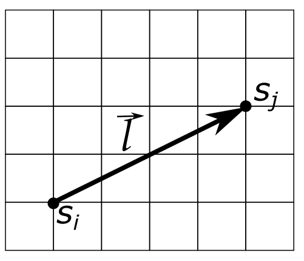
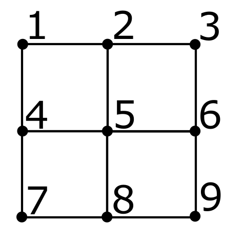

Y21 (2021) — English translation
Hint: The running time for this task can be quite long for some parameter values. Therefore, you should choose the parameters and operating time so that, on the one hand, you achieve reasonable accuracy, and on the other hand, have time to make the necessary measurements. To speed up calculations, you can run several copies of the same program in parallel with different parameters. Errors should only be assessed at points where this is explicitly requested.
The two-dimensional Ising model is one of the simplest models of the paramagnetic-ferromagnetic phase transition. The model is a square lattice, at the nodes of which magnetic moments are located. Each of these magnetic moments can be directed in one of two directions - up or down. The state of the magnetic moment is given by the variable $s_i$, where the index $i$ denotes a lattice site. $s_i = 1$ corresponds to a magnetic moment directed upward, and $s_i =-1$ – downward. The energy of such a system is determined by the interaction of nearby magnetic moments. If two magnetic moments are co-directed, the contribution of this pair to the energy is $-J$, if they are oppositely directed, then $+J$. Here $J$ is a certain constant with the dimension of energy, characterizing the strength of interaction between magnetic moments. If the system is placed in an external magnetic field, each magnetic moment will have an additional energy $h$ if it is directed against the field, and an energy $-h$ if it is directed along the field. Value $h = \mu B$, where $B$ is the magnetic field, $\mu$ is the magnitude of the magnetic moment. In what follows we will assume that $\mu = 1$ and call $h$ the magnetic field.
The magnetization of the system $m$ will be called the average value of the magnetic moment (in units $\mu$): $$ m = \frac{1}{N} \sum_i s_i = \langle s_i \rangle. $$ Суммирование по всем узлам решетки, $N = L^2$ – число узлов. Магнитной восприимчивостью называется величина $$ \chi =\left. \frac{\partial m}{\partial h}\right|_{h=0}. $$ Корреляционной функцией магнитных моментов называется среднее значение произведения двух магнитных моментов $s_i$ и $s_j$, смещенных на вектор $\vec{l}$ друг относительно друга (с учетом того, что узлы на противоположных краях решетки отождествляются). $$ С(\vec{l}) = \frac{1}{N}\sum_i s_i s_j. $$ This value depends on the displacement vector and on the system parameters (size, temperature, magnetic field).

We will work with a lattice of size $L\times L$. The total energy of the system is $$ E = -J \sum_{\langle ij \rangle} s_i s_j -h \sum _i s_i $$ суммирование ведется по всем парам соседних магнитных моментов, причем считается, что магнитные моменты, расположенные на противоположных краях решетки, взаимодействуют друг с другом (периодические граничные условия). Благодаря этому узлы на границе ничем не выделены. Например для решетки, изображенной на рисунке, для узла 5, расположенного по центру, соседними являются узлы 2, 4, 6, 8. Для узла 2 соседними считаются 1, 3, 5, 8. Наконец для узла 3 соседними являются 2, 6, 1, 9. Второе слагаемое учитывает внешнее магнитное поле $h$, summation occurs over all lattice sites.

The energy of the system is minimal when all magnetic moments are oriented in the same way - either all up or all down. However, if the temperature of the system is non-zero, it can be in a state with more energy. The probability that the system is in a certain state is proportional to $$ P \sim e^{-E/k_BT}. $$ В дальнейшем мы будем считать $k_B = 1$. Также будем считать $J=1$, а температура будет безразмерной величиной. Несмотря на то, что вероятность находиться в состояниях с большей энергией мала, таких состояний очень много. Поэтому при достаточно больших температурах система почти наверняка будет находиться в состоянии, в котором средняя намагниченность равна нулю. При некоторой температуре $T_c$ произойдет фазовый переход ферромагнетик- парамагнетик.
Из-за огромного числа состояний ($2^{N}$!) определить средние значения с помощью суммы по всем распределениям практически невозможно. Поэтому мы будем использовать приближенный метод – алгоритм Метрополиса. Суть алгоритма следующая. Начинаем со случайного распределения магнитных моментов. Далее движемся по решетке и для каждого магнитного момента определяем изменение энергии $\Delta U$, если поменять направление на противоположное. Если $\Delta U< 0$, переворачиваем магнитный момент, иначе переворачиваем его с вероятностью $p = \exp(- \Delta U/T)$. It can be shown that after a large number of iterations we will obtain all configurations of magnetic moments with the correct probabilities. The simulation results can be used to calculate various thermodynamic quantities.
exe The executable file for Windows is published on GitHub.
The program provided to you initializes a random distribution of magnetic moments on a square lattice of a given size $L \times L$ and implements a given number of steps of the Metropolis algorithm for a given temperature and magnetic field. At each step, the algorithm tries to flip $L^2$ randomly selected magnetic moments. After finishing the simulation, the program produces the average magnetization value $m$, as well as $m^2$ and $m^4$. These averages are calculated as follows. After each step of the algorithm, the magnetization value $m_a$ is calculated ($a$ is the step number). Then the values are displayed $$ m : \frac{1}{I}\sum_{a=1}^I m_a; $$ $$ m ^2: \frac{1}{I}\sum_{a=1}^I m_a^2; $$ $$ m^4: \frac{1}{I}\sum_{a=1}^I m_a^4. $$ Также программа позволяет посмотреть на график зависимости намагниченности $m_a$ от номера шага алгоритма и распределение магнитных моментов в конце симуляции. После запуска программа предложит вам выбрать необходимое действие. Это можно сделать, введя нужную цифру и нажав ENTER. Значения цифр:
1 - Задать размер решетки $L⟦ M14⟧C(\vec{l})$, используя результат последнего моделирования (конечное распределение магнитных моментов) . Программа попросит вас по очереди задать компоненты $x$ и $y$ вектора смещения $\vec{l}$ - integers. 5 - Set the magnitude of the magnetic field. After this, the program will ask you to enter a new magnetic field value - a real number. 6 - Set the temperature. After this, the program will ask you to enter a new temperature value - a positive real number. 7 - Show current system parameters. In cases where the program asks you to enter a specific parameter, this can be done by typing the appropriate number and pressing ENTER. If the number is a fraction, separate the whole part from the fraction using a dot (for example, 10.5). After completing the current operation, the program will prompt you to enter the number of the next action.
Due to the small size of the system, all measured quantities fluctuate greatly, especially near the phase transition point. In order to obtain the parameters we are interested in with reasonable accuracy, it is necessary to make a correction for the final size of the system. Do not use meshes larger than $L = 20$ in this section! Working with them will take too much time. $ \textbf{Для всех измерений указывайте значение размера решетки, при которых они проводились!} $ Binder parameter is the value of $$ U = 1- \frac{\langle m^4 \rangle}{3 \langle m^2 \rangle^2}. $$ Коэффициенты выбраны таким образом, чтобы для гауссовых флуктуаций параметр был бы равен нулю. Можно показать, что если построить графики зависимости $U$ on temperature at different sizes of the system, then they intersect at one point just at the temperature of the phase transition.
When the distance between magnetic moments is large enough, their correlation function behaves as $$ C(\vec{l}) \sim \frac{1}{r^a} e^{-|\vec{l}|/\xi}. $$ Здесь $\xi$ – корреляционная длина. В принципе она может зависеть от температуры. Экспонента меняется намного быстрее степенной функции, поэтому зависимость можно с хорошей точностью считать чисто экспоненциальной. Выберем температуру как можно более близкой к температуре фазового перехода $T = T_c$. If you were unable to determine the phase change temperature in Part B, select the best estimate you could get for the temperature. Explicitly write the temperature value used.
Source: https://pho.rs/p/243